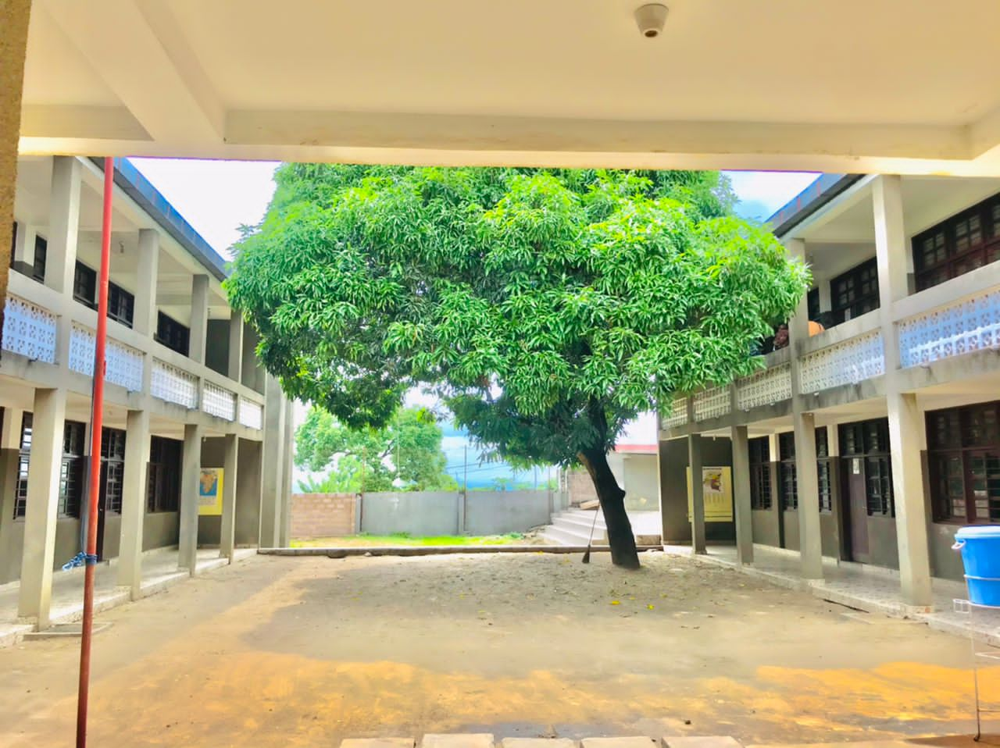
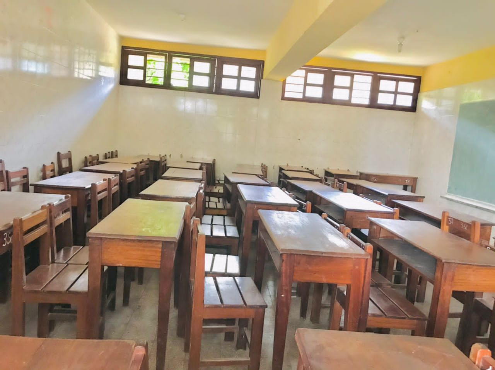
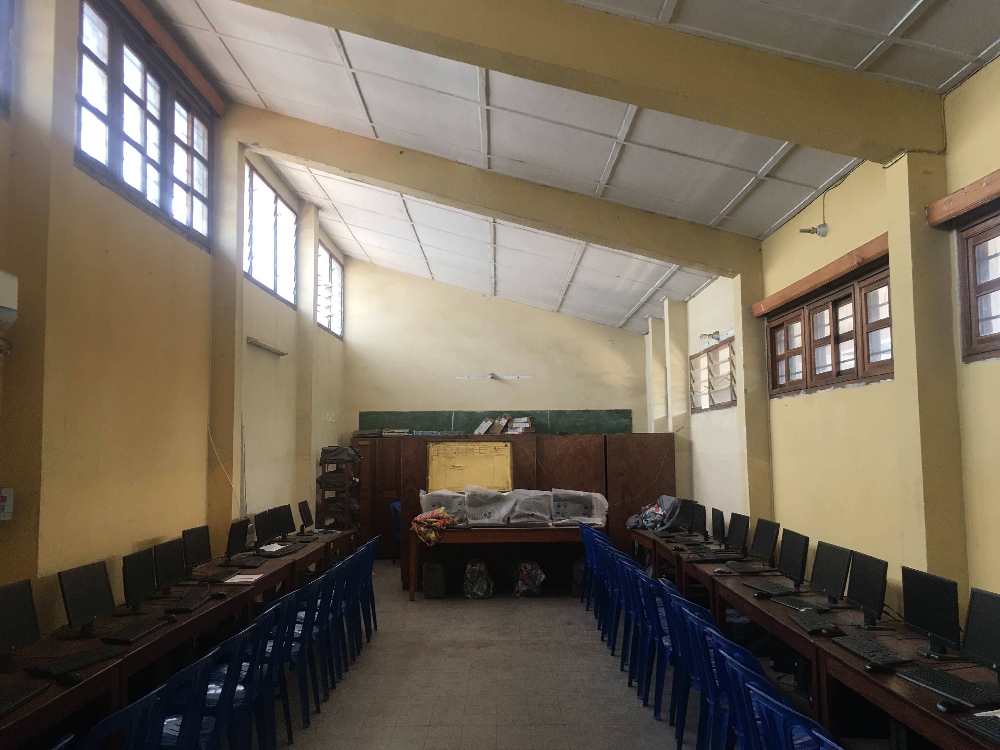
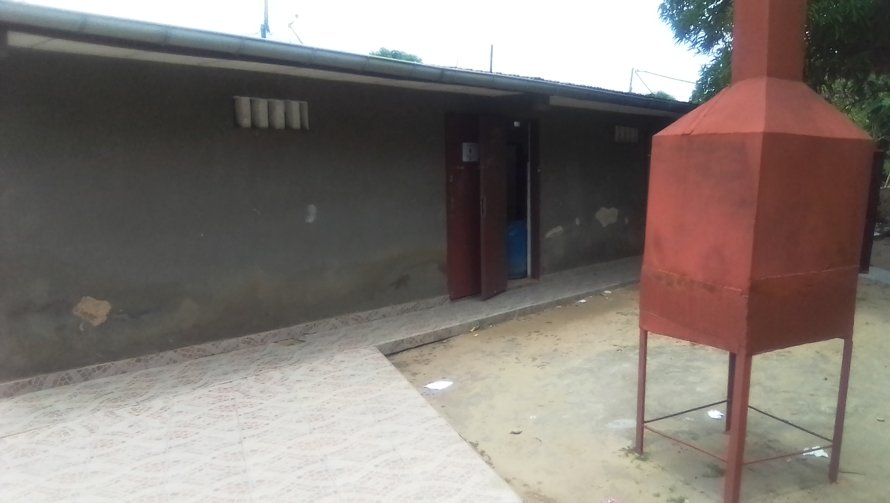

Petit tour d'horizon des infrastructure de l'institut Carmen Salles
LES BATIMENTS

L'Institut Carmen Salles comprend deux bâtiments élevés à un niveau
dont les classes allant de la 1ere en 3eme sont en dessous tandis que
ceux de la 4ème en 6ème sont au dessus. Au coté gauche nous avons le
bâtiment où se trouve les classes de la section commerciale et celui
de droit les classes de la section scientifique
Les salles de classe

Elles sont composées des chaises,des tables et d'une armoire en bois,
d'un tableau vert bien accroché sur le mur.
Le laboratoire
Le laboratoire possède les réactifs et materiels necessaires pour un
apprentissage dans de bonne condition
La salle informatique

La salle informatique possède plus de 20 ordinateurs modernes pour
l'apprentissage de l'informatique
La chapelle
L'Institut Carmen Salles est une école chrétienne qui en dehors des
cours organise aussi des moments de prière par classe
Installation hygienique

Les installations hygieniques se trouvent un peu eloigné des batiments
elle est divisé en deux partie l'une pour les filles et l'autre pour
les garçons